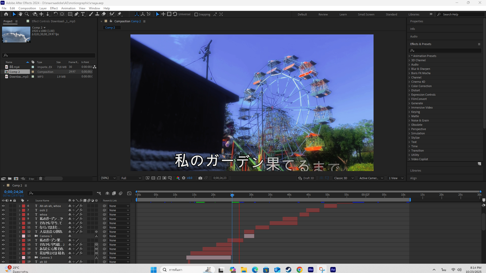
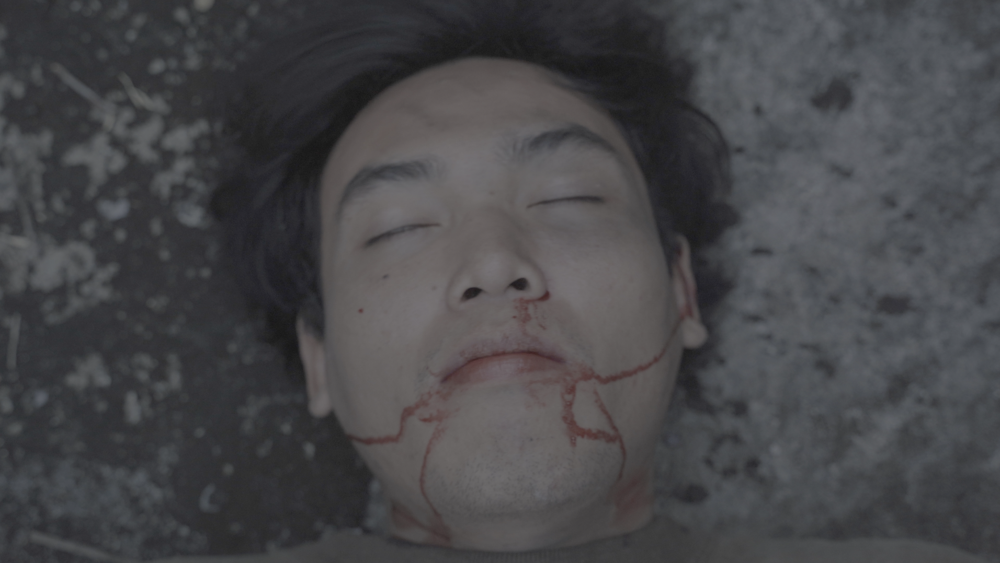
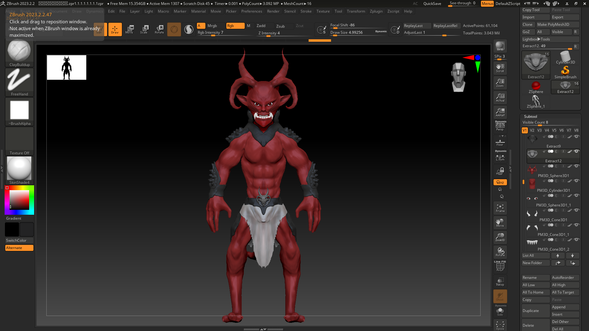
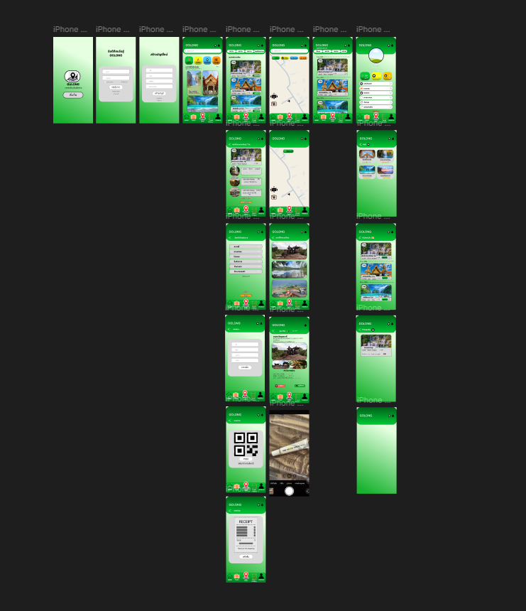
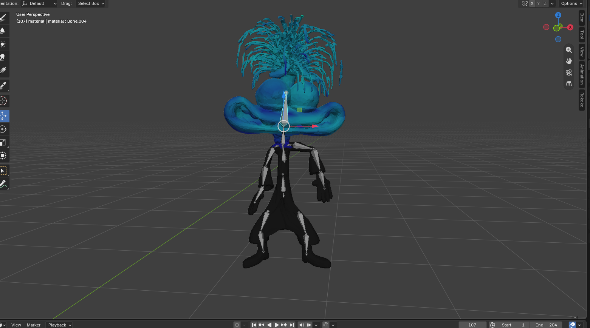
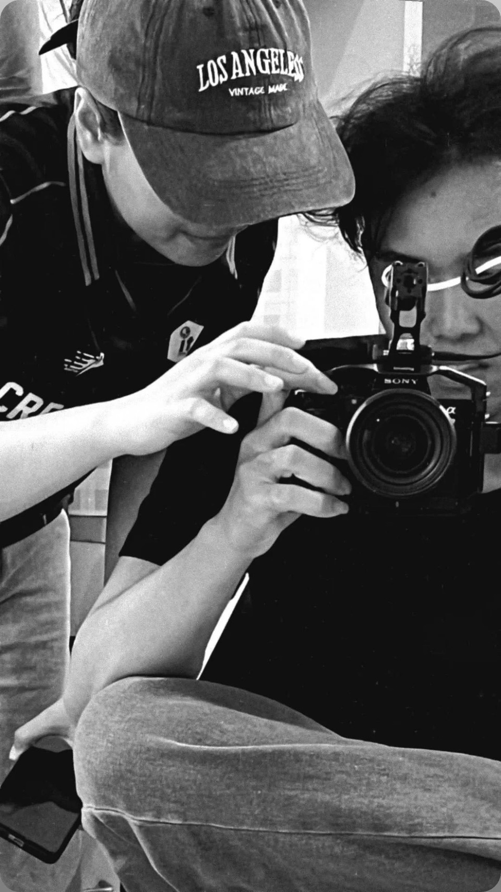

รวมผลงานด้าน Game Design, Web Development, 3D Assets และ Creative Media

ใช้โปรแกรม adobe after effects ในการตัดคลิปและทำ VFX

รับบทเป็นนักแสดงไห้กลองถ่าย

สร้างโมเดล 3 มิติ ออกแบบภาพกราฟิกสำหรับการนำไปใช้ในงานเกมและสื่อมีเดีย

การออกแบบเว็บและแอปในการใช้งานไห้เข้ากับผู้ใช้

การใส่กระดูก (Bone Rigging) ควบคุมข้อต่อและอนิเมชันของตัวละครสำหรับการเคลื่อนไหวที่สมจริงในเกม

การถ่ายทำงาน เป็นตากล้อง